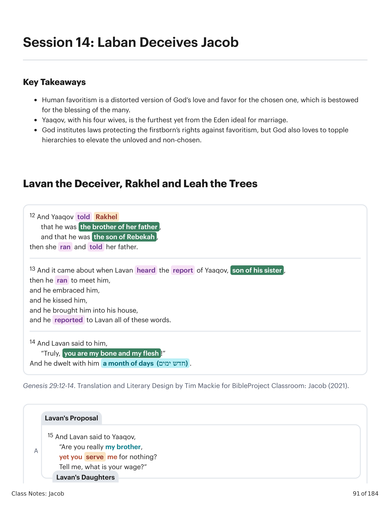
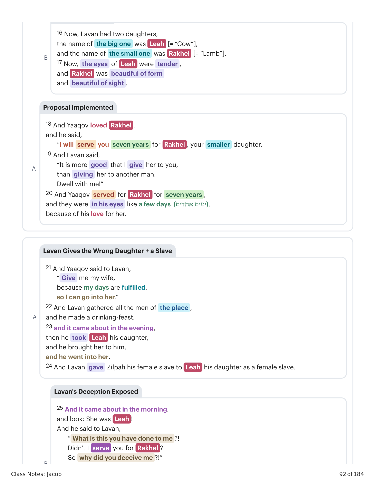
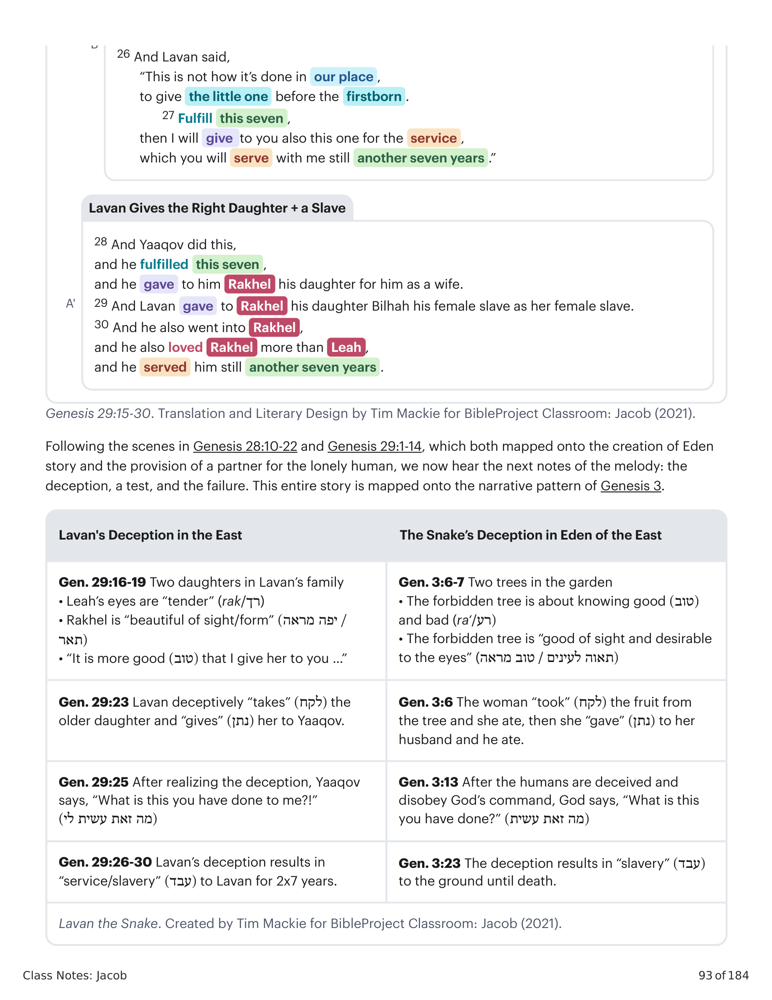
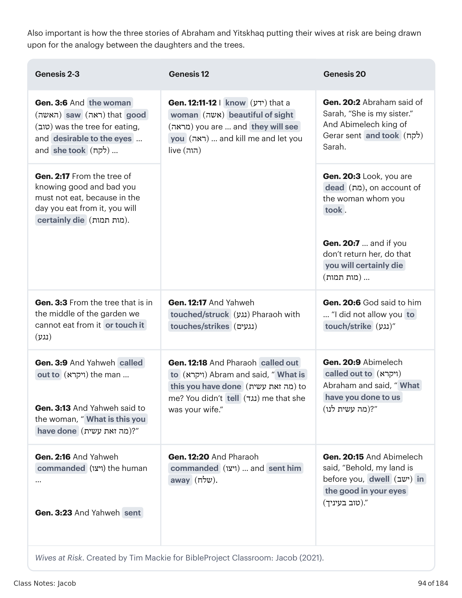
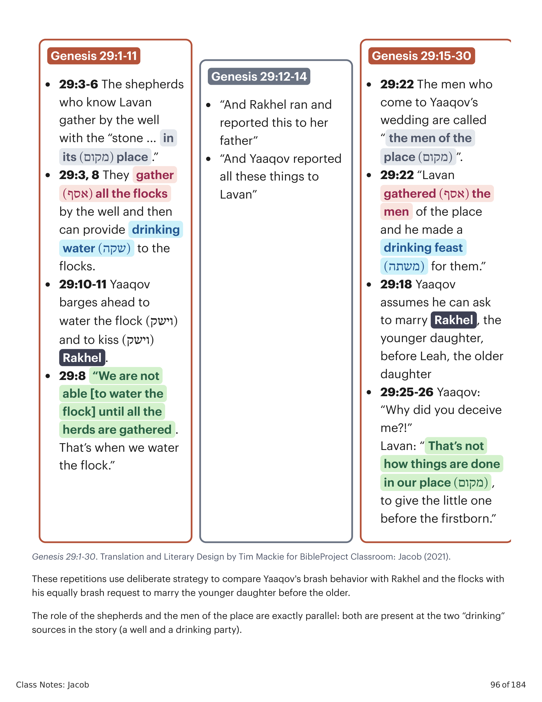

12 E Yaaqov contou a Rakhel que era irmão de seu pai, e que era filho de Rebeca, e ela correu e contou a seu pai. 13 E aconteceu que, ouvindo Lavan a nova de Yaaqov, filho de sua irmã, correu ao seu encontro, e o abraçou, e o beijou, e o trouxe à sua casa, e contou a Lavan todas estas palavras. 14 E Lavan lhe disse: "Certamente, tu és meu osso e minha carne!" E habitou com ele um mês de dias. 15 E Lavan disse a Yaaqov: "És tu verdadeiramente meu irmão, e hás de servir-me de graça? Dize-me, qual é o teu salário?" 16 Ora, Lavan tinha duas filhas: o nome da maior era Leah [= "Vaca"], e o nome da menor era Rakhel [= "Cordeira"]. 17 E os olhos de Leah eram tenros, mas Rakhel era formosa de forma e formosa de vista. 18 E Yaaqov amou a Rakhel, e disse: "Servir-te-ei sete anos por Rakhel, tua filha menor." 19 E Lavan disse: "É melhor que ta dê a ti do que dá-la a outro homem. Habita comigo!" 20 E Yaaqov serviu por Rakhel sete anos, e pareceram-lhe poucos dias, por causa do seu amor por ela. 21 E Yaaqov disse a Lavan: "Dá-me minha mulher, porque meus dias são cumpridos, para que eu entre a ela." 22 Então Lavan ajuntou todos os homens do lugar, e fez um banquete. 23 E aconteceu que, à tarde, tomou Leah sua filha, e a trouxe a ele, e ele a tomou. 24 E Lavan deu a Leah sua filha Zilpa, sua serva, por serva. 25 E aconteceu que, pela manhã, eis que era Leah! E ele disse a Lavan: "Que é isto que me fizeste?! Não te servi eu por Rakhel? Por que, pois, me enganaste?!" 26 E Lavan disse: "Não se faz assim em nosso lugar, dar a menor antes da primogênita. 27 Cumpre esta semana, e dar-te-ei também esta, pelo serviço que ainda comigo servirás outros sete anos." 28 E fez Yaaqov assim, e cumpriu a semana, e ele lhe deu Rakhel sua filha por mulher. 29 E Lavan deu a Rakhel sua filha Bila, sua serva, por serva. 30 E ele também entrou a Rakhel, e também amou a Rakhel mais do que a Leah, e serviu com ele ainda outros sete anos.12 And Yaaqov told Rakhel that he was the brother of her father, and that he was the son of Rebekah, then she ran and told her father. 13 And it came about when Lavan heard the report of Yaaqov, son of his sister, then he ran to meet him, and he embraced him, and he kissed him, and he brought him into his house, and he reported to Lavan all of these words. 14 And Lavan said to him, "Truly, you are my bone and my flesh!" And he dwelt with him a month of days. 15 And Lavan said to Yaaqov, "Are you really my brother, yet you serve me for nothing? Tell me, what is your wage?" 16 Now, Lavan had two daughters, the name of the big one was Leah [= "Cow"], and the name of the small one was Rakhel [= "Lamb"]. 17 Now, the eyes of Leah were tender, and Rakhel was beautiful of form and beautiful of sight. 18 And Yaaqov loved Rakhel, and he said, "I will serve you seven years for Rakhel, your smaller daughter." 19 And Lavan said, "It is more good that I give her to you, than giving her to another man. Dwell with me!" 20 And Yaaqov served for Rakhel for seven years, and they were in his eyes like a few days, because of his love for her. 21 And Yaaqov said to Lavan, "Give me my wife, because my days are fulfilled, so I can go into her." 22 And Lavan gathered all the men of the place, and he made a drinking-feast. 23 and it came about in the evening, then he took Leah his daughter, and he brought her to him, and he went into her. 24 And Lavan gave Zilpah his female slave to Leah his daughter as a female slave. 25 And it came about in the morning, and look: She was Leah! And he said to Lavan, "What is this you have done to me?! Didn't I serve you for Rakhel? So why did you deceive me?!" 26 And Lavan said, "This is not how it's done in our place, to give the little one before the firstborn. 27 Fulfill this seven, then I will give to you also this one for the service, which you will serve with me still another seven years." 28 And Yaaqov did this, and he fulfilled this seven, and he gave to him Rakhel his daughter for him as a wife. 29 And Lavan gave to Rakhel his daughter Bilhah his female slave as her female slave. 30 And he also went into Rakhel, and he also loved Rakhel more than Leah, and he served him still another seven years.

Gênesis 29:12-14. Tradução e Design Literário por Tim Mackie para BibleProject Classroom: Jacó (2021).Genesis 29:12-14. Translation and Literary Design by Tim Mackie for BibleProject Classroom: Jacob (2021).

Gênesis 29:15-30. Tradução e Design Literário por Tim Mackie para BibleProject Classroom: Jacó (2021).Genesis 29:15-30. Translation and Literary Design by Tim Mackie for BibleProject Classroom: Jacob (2021).
Seguindo as cenas em Gênesis 28:10-22 e Gênesis 29:1-14, que ambas se mapearam sobre a história da criação do Éden e a provisão de uma parceira para o humano solitário, agora ouvimos as próximas notas da melodia: o engano, um teste e a falha. Toda esta história se mapeia sobre o padrão narrativo de Gênesis 3. Lavan, o pai, age como uma serpente enganosa sobre suas filhas e as usa para cooptar para si a bênção do escolhido de Deus.Following the scenes in Genesis 28:10-22 and Genesis 29:1-14, which both mapped onto the creation of Eden story and the provision of a partner for the lonely human, we now hear the next notes of the melody: the deception, a test, and the failure. This entire story is mapped onto the narrative pattern of Genesis 3. Lavan, the father, acts like a deceitful snake about his daughters and uses them to co-opt for himself the blessing of God's chosen one.

Lavan, a Serpente. Criado por Tim Mackie para BibleProject Classroom: Jacó (2021).Lavan the Snake. Created by Tim Mackie for BibleProject Classroom: Jacob (2021).
Em todas essas histórias, um enganador semelhante a uma serpente toma o que Deus deu como bênção (árvores/uma esposa) e o torce em violação do mandamento e da promessa de Deus. Em Gênesis 3, a serpente enganou marido e mulher sobre uma árvore proibida. Em Gênesis 12, 20 e 26, o marido age como uma serpente enganosa sobre uma esposa proibida. Em Gênesis 29, o pai age como uma serpente enganosa sobre suas filhas e as usa para cooptar para si a bênção do escolhido de Deus.In all of these stories, a snake-like deceiver takes what God has given as a blessing (trees/a wife), and twists it into a violation of God's command and promise. In Genesis 3, the snake deceived a husband and wife about a forbidden tree. In Genesis 12, 20, and 26, the husband acts like a deceitful snake about a forbidden wife. In Genesis 29, the father acts like a deceitful snake about his daughters and uses them to co-opt for himself the blessing of God's chosen one.
Recordem as longas conversas de Yaaqov com os pastores em Gênesis 29:4-8 e o foco aparentemente aleatório no costume normal dos pastores orientais de esperar para dar água a suas ovelhas até que todos os rebanhos se ajuntem. Há um esforço significativo do autor para recordar esses temas aqui neste painel sobre o engano de Lavan e o casamento de Yaaqov com suas filhas. O papel dos pastores e dos "homens do lugar" é exatamente paralelo: ambos estão presentes nas duas fontes de "bebida" da história (um poço e uma festa). Yaaqov, no papel de trapaceiro e manipulador em sua própria família, pode ter tido sucesso até certo ponto, mas agora que está nadando em um açude maior, descobre que seus velhos truques não funcionam tão bem.Recall Yaaqov's long conversations with the shepherds in Genesis 29:4-8 and the seemingly random focus on the eastern shepherds' normal custom of waiting to water their sheep until all the flocks are gathered. There is a significant effort made by the author to recall those themes here in this panel about Lavan's deception and Yaaqov's marriage to his daughters. The role of the shepherds and the men of the place are exactly parallel: both are present at the two "drinking" sources in the story (a well and a drinking party). Yaaqov's role as the trickster and manipulator in his own family may have brought him success up to a point, but now that he's swimming in a bigger pond, he finds that his old tricks don't work so well anymore.

Esposas em Risco. Criado por Tim Mackie para BibleProject Classroom: Jacó (2021).Wives at Risk. Created by Tim Mackie for BibleProject Classroom: Jacob (2021).
A narrativa de Yaaqov no exílio foi desenhada como uma exploração elaborada do tema em Provérbios sobre como os esquemas dos perversos sempre recaem sobre eles. Provérbios 26:24-27: "Quem odeia, disfarça-se com seus lábios, e no seu coração encobre o engano... Quem abre uma cova, nela cairá; e a pedra tornará sobre aquele que a revolve." Esta é uma afirmação clássica do modelo bíblico de retribuição "olho por olho": o que quer que tenhas feito a outros finalmente voltará para ti. Observe como nesta primeira história do engano de Lavan, ele faz a Yaaqov exatamente o que Yaaqov fez a seus familiares. O engano de Lavan contém as características principais do engano de Yaaqov e Rivqah: Rakhel é a irmã menor, favorecida por Yaaqov, assim como Yaaqov é o irmão menor, amado por Rivqah e escolhido por Deus; Leah é a irmã maior, não-amada por Yaaqov, assim como Esaú é o irmão maior, amado por Yitskhaq, não-escolhido por Deus. O engano de Yaaqov lhe rendeu a bênção; o engano de Lavan inverte a bênção em escravidão. O engano de Lavan também usa palavras-chave e temas da história de Yaaqov: disfarçar-se, engano, astúcia, sete, e rolar uma pedra.The narrative of Yaaqov in exile has been designed as an elaborate exploration of the theme in Proverbs about how the schemes of the wicked always come back upon them. Proverbs 26:24-27: "Whoever hates, he disguises himself with his lips, and harbors deception in his heart... Whoever digs a pit will fall into it, and whoever rolls a stone, it will turn back onto him." This proverb is a classic statement of the biblical "eye for eye" model of recompense: Whatever you've done to others will eventually make its way back to you. Notice how in this first story of Lavan's deception, he does to Yaaqov exactly what Yaaqov did to his family members. Lavan's deception contains the main features of Yaaqov and Rivqah's deception. Rakhel is the younger sibling, favored by Yaaqov // Yaaqov is the younger sibling, loved by Rivqah and chosen by God. Leah is the older sibling, unloved by Yaaqov // Esau is the older sibling, loved by Yitskhaq, non-chosen by God. Yaaqov's deception earned him the blessing // Lavan's deception inverts the blessing into slavery. Lavan's deception also uses key words and themes from the Yaaqov story: disguising oneself, deception, trickery, seven, and rolling a stone.

Gênesis 29:1-30. Tradução e Design Literário por Tim Mackie para BibleProject Classroom: Jacó (2021).Genesis 29:1-30. Translation and Literary Design by Tim Mackie for BibleProject Classroom: Jacob (2021).
Como o engano de Lavan no casamento de Yaaqov é uma versão distorcida da bênção do Éden e uma inversão dos próprios enganos de Yaaqov?How is Lavan's deception at Yaaqov's wedding a distorted version of Eden blessing and a reversal of Yaaqov's own deceptions?